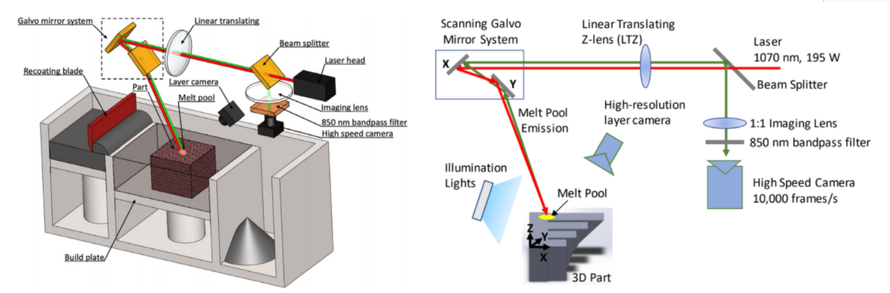
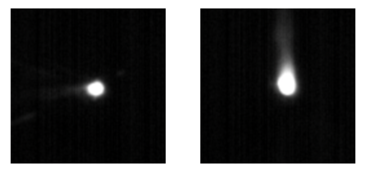
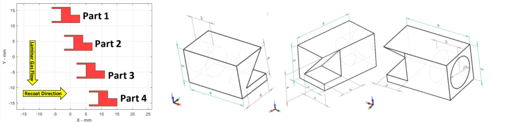
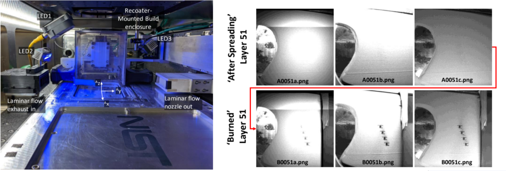
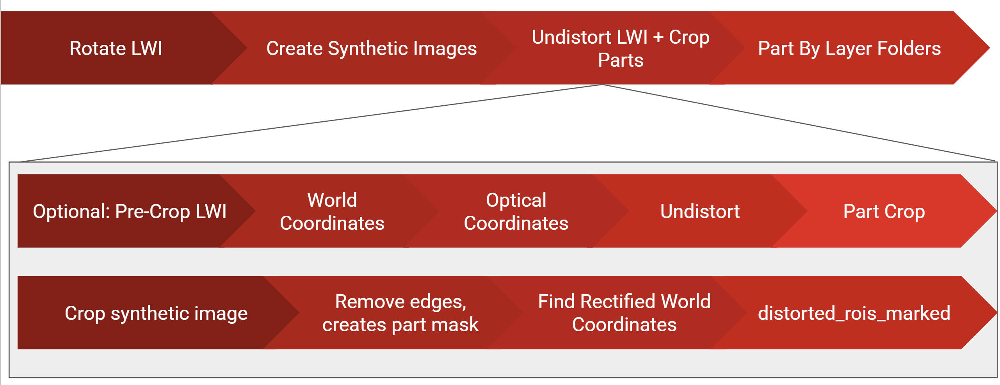
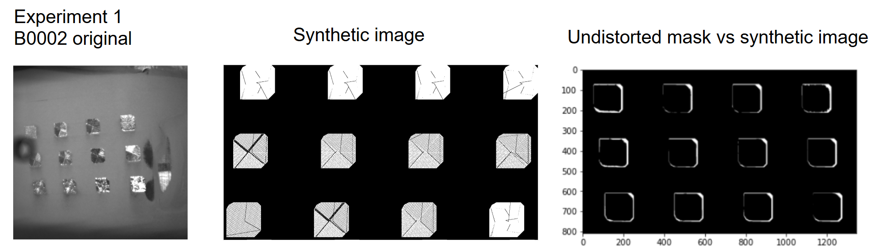
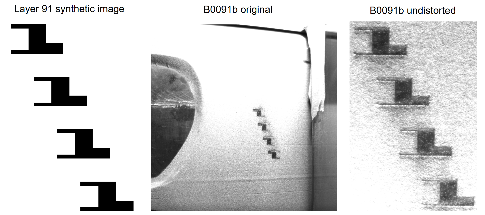
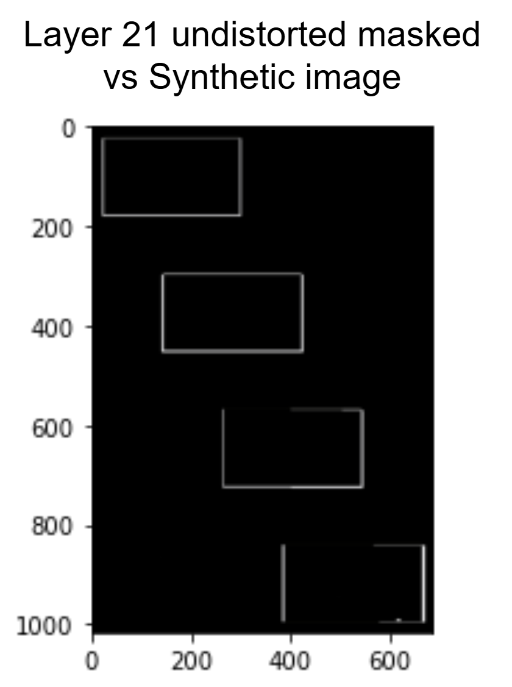
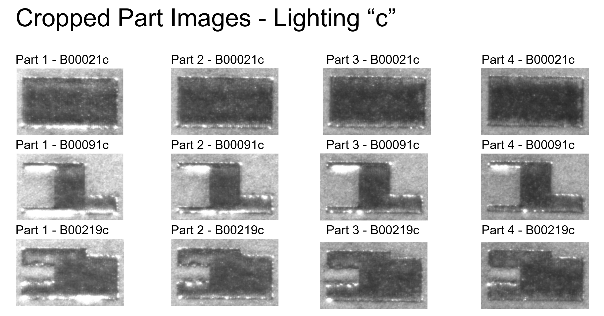

Dates: June 2019 – August 2020
Team: Engineering Lab, Additive Manufacturing Project
Developed software tools, computer vision pipelines, and image analysis methods for additive manufacturing research at the National Institute of Standards and Technology.
Additive manufacturing (AM) offers transformative potential for many industries, but adoption had been bottlenecked by the absence of public qualification standards. Without qualification, each organization must conduct its own costly, time-consuming testing programs, and data almost always remains proprietary. Laser Power Bed Fusion (L-PBF) AM had also been facing adoption issues due to how prevalent defects (gas pores, lack-of-fusion, cracking, warping) occur.
During three internships with NIST's Engineering Laboratory, I worked on projects supporting additive manufacturing data management, process monitoring, and image analysis. My work ranged from automating data curation workflows for the Additive Manufacturing Materials Database (AMMD) to developing computer vision algorithms for processing layerwise images collected during metal additive manufacturing builds. These projects combined software development, data engineering, image processing, and manufacturing research.
The Additive Manufacturing Materials Database (ammd.nist.gov)
stores material and process data from additive manufacturing experiments. Previously, it required researchers to manually convert Excel-based experimental results into structured XML before upload. I wrote Python scripts to automate this conversion pipeline: queried file repositories, automatically located matching datasets, downloading and unzipping them, parsing Excel data, and generating XML files that are uploaded to the database.Melt pool geometry is a key indicator of print quality in L-PBF adn directly influences part microstructure and mechanical properties. Improper melt pool formation underlies the majority of fusion defects and trapped-gas porosity. I developed image-processing Python programs to extract melt pool properties from high-speed camera images captured during Additive Manufacturing Metrology Testbed (AMMT) printing tests. The programs extracted geometric measurements and process metrics that could be used by researchers to analyze process stability and correlate printing parameters with manufacturing outcomes.


During metal additive manufacturing builds, cameras capture images after each layer is deposited and fused. These layerwise images can provide valuable information about process defects, powder spreading quality, and part distortion Capturing an image of each layer before and after laser sintering allows us to observe print behavior and predict defects while the print is happening. However, because the camera was mounted at an angle relative to the build plane, the images contained significant geometric distortion and could not be directly compared against the intended build geometry. If defects cannot be accurately located in real-world coordinates, the AMMT cannot adjust laser parameters in real time or stop an unrecoverable print.
Thus, I developed a computer vision pipeline to correct perspective-distorted layerwise images (LWIs). The corrected images enable accurate real-world localization of surface defects for future closed-loop feedback to the AMMT during printing.
Experiment 2 part, setup with three light sources, and resulting layerwise images


I developed a computer vision pipeline in Python that aligned and undistorted layerwise images using build command data and synthetic reference images generated from the CAD geometry. Multiple image registration techniques were investigated, including perspective transformations and homography-based methods using varying numbers of reference points.

To quantitatively evaluate each method, I generated image masks and compared them against synthetic reference images using contour area, bounding rectangle dimensions, corner locations, and total pixel differences. The results showed that homography-based approaches provided the best overall alignment performance while balancing geometric accuracy and positional consistency.

The finalized method was applied to Experiment 2's layerwise images, and quantitatively evaluated.


After image alignment, I developed software to automatically crop individual parts from each layer and organize the results into a structured dataset. Images were sorted by part and layer number, allowing researchers to quickly review the evolution of each printed component throughout the build process.

Using the processed image dataset, I investigated manufacturing defects and recurring process patterns. Analysis revealed several common phenomena, including powder ridges propagating between layers, elevated edges along part boundaries, corner protrusions through powder layers, and defects that appeared during fusion despite not being visible in the preceding powder layer.
These observations helped develop in-situ monitoring and automated defect detection during additive manufacturing builds. I looked into four main laser properties that could be adjusted mid-print:
The automation pipeline for XML curation eliminated manual data preparation steps, enabling faster and more reliable contributions to the publicly accessible AM Material Database. The layerwise image pipeline produced corrected, cropped, and organized image datasets ready for downstream machine learning and defect classification work. Defect pattern findings (elevated edges, corner protrusion, subsurface blobs) gave the AMMT team actionable hypotheses for parameter adjustment and future automated image analysis and in-situ defect corretion work.
Python • Computer Vision • Image Processing • Data Automation • Data Engineering • Additive Manufacturing • Research & Development • Experimental Data Analysis • Homography & Perspective Mapping • Additive Manufacturing • Process Monitoring • Defect Analysis